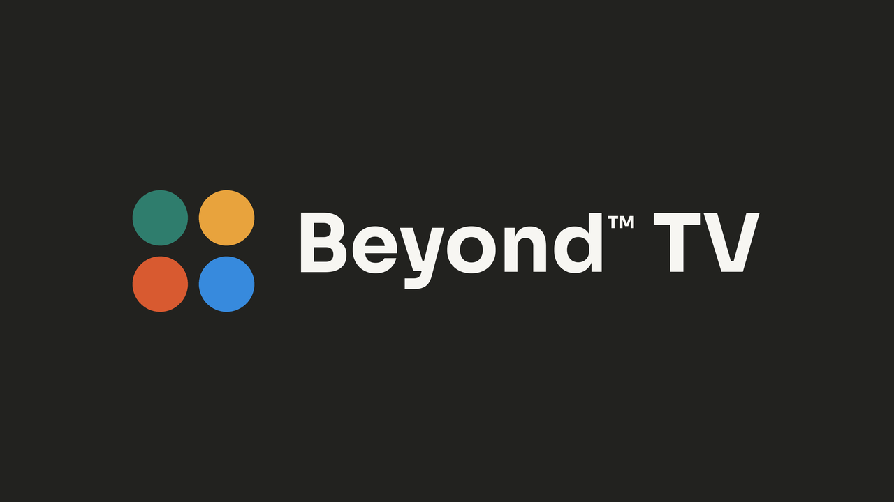

Free your world.
One calm home screen for the whole whānau. Beyond™ TV swaps your TV's ad-filled home screen for a quiet one: your streaming apps in one App Dock, what's worth watching tonight, and nothing trying to sell you anything. Free, and built in Aotearoa by Beyond.

What it does now
A clean home screen in place of the sponsored rows, with a one-tap way back to the original.
Netflix, Neon, TVNZ+, Disney+, ThreeNow, Plex and the rest, as square icons with their names underneath, like an iPad, in the order you like.
Trending films and shows, picked only from the services you already have.
Google TV and Android TV, LG and Samsung, all with the same home screen.
Samsung Smart TVs from 2011 to 2015 (Orsay, like a 2014 H6300) get Beyond™ TV as an app in Smart Hub, installed with one line from a computer on your Wi-Fi, nothing to build. The picks, weather, games and Beyond Family come too. Being tried on a real one now.
Kia ora, and your name, at the top. Keep watching shows what you last opened from Beyond as little TV screens, so the next episode is one press away. Tonight at home sits beside it: tea, birthdays, who's where and the weather, with your family's faces when Beyond Family is linked. On LG, Samsung and Google TV.
Beyond purple, day and night: soft violet light that rises and falls six times a minute, slowing down as the evening does, with tiny sparkles drifting up through it. Calm, never still.
Press the four dots, say what would make it better, and we read every one. If we reply, it shows up on your TV.
"Who's watching?" now starts with Family: everyone on the couch at once, with picks the whole family can watch. Then a profile for each person, and kids' profiles with their own apps behind a grown-up PIN. Kids never see the settings. From 13, a kid's profile becomes a teen one with YouTube, worked out from their birthday in Beyond Family. It asks every time the TV comes on.
A Games button on the home screen holds karaoke, a party, quiz night, the dinner question, the tidy-up race and bedtime breathing. Pick who's singing and the song with the remote, and run quiz night from the couch. No phone needed to start anything.
Keep the songs your family loves and build playlists of who sings what, with the remote or on your phone. Every song plays right inside Beyond TV, words on screen, and the next singer is up as soon as one finishes. The best karaoke versions come first.
Beyond TV looks for an update the moment the TV starts or wakes up, so a fix is there the next time you sit down. And it says hello with a soft four-note chime, one note for each of Beyond's four dots. Sounds in Beyond™ TV Settings turns it off.
Set a time in Beyond Family, like 7:15 every night, and the TV turns itself on and starts the race. First it asks who's tidying: everyone's ticked, untick anyone who's out, press Go. Then a big clock counts up with their faces. Whoever's done grabs the remote and presses OK on their face, first, second, third, with their time. Nobody runs out of time. Or start one from your phone any time. Google TV turns itself on; on LG and Samsung it starts when the TV is already on.
For families across two homes. Start it from the Beyond Family app and every TV counts down together, so you all press play at the same moment. Reactions fly between phones and onto the TV. On Google TV, LG and Samsung.
Switch it on in Beyond Family and a kid's apps wait until today's jobs are ticked off. The TV shows what's left, and opens up the moment the last one is done. On Google TV, LG and Samsung.
When nobody's watching, the TV shows today beside the clock: who's where, what's for tea, birthdays, and the notes you left each other in Beyond Family. Switch it on in the app. On LG and Samsung, and in Tonight at home on Google TV.
Leave the home screen for 3 minutes and the screensaver comes on. Pick 1 to 30 minutes in Beyond™ TV Settings. On Google TV, LG and Samsung.
When nobody is watching, the TV becomes a gallery, like a Samsung Frame: a painting from the Art Institute of Chicago's collection filling the whole screen, with nothing written on it. Pick the kind you like in Beyond™ TV Settings: landscapes, the sea, gardens and flowers, mountains, impressionism, still life, or a mix that changes every day. Messages from the family still come up over it. On the mix, at Halloween and Christmas it dresses up with our own seasonal art: friendly ghosts, pumpkins, pōhutukawa and pav.
Falling asleep in front of a show? Sleep Timer in the menu turns the TV off after 15, 30, 60 or 90 minutes, with a heads-up a minute before.
Draw a note on your phone in Beyond Family and it sits on the TV's home screen like a note on the fridge, never in the way of what's on. Send a heart back from the remote. Linked to Beyond Family, the four dots become Ask Beyond: say what you're in the mood for, on the TV or from your phone, and it thinks it over and puts up picks from the apps you have. Kids get kids' answers, and Beyond doesn't keep what you ask. On Google TV, LG and Samsung.
Party games for the whole room with one remote. Who's most likely to…? (the TV counts down by itself, everyone points, and the winner gets a funny title), Would you rather? (everyone runs to a side of the room) and Spin for a dare (the spinner lands on someone with a silly dare). Heaps of funny lines, all clean, with a few extra for grown-ups when the kids are in bed. Awards at the end. On Google TV, LG and Samsung.
Four games for the remote alone: Eel, Paddle, Sky Guard and Dot Chase. Press a direction and you keep going, so there is nothing to hold down. Games › Arcade.
Ludo, Chess (against a robot, or two of you on one remote), Snap and our own slap game, Sheep, Penguin, Volcano (say the word, turn the card, slap OK when they match), against friendly robots named after our birds. Every card, slap and snap has its own sound, Ludo's die tumbles and bounces like it was thrown, the cards turn at an easy pace, and Snap comes round often. Pick who's playing and the robots grow with each person: fair dice, never cheating, a little smarter every time you win, so the game stays close. At the end you get real tips from the game you just played, and a robot that's a good sport whether it won or lost. Scores stay on your TV. On Google TV, LG and Samsung.
Press the star at the top of the home screen for a star chart of the sky over your house right now: the Southern Cross, Matariki, the brightest stars and the constellations, with the moon's phase as it looks from here, when it rises and sets, and the next full moon. Move it an hour at a time to see what's coming up. Worked out on the TV, no internet needed. On Google TV, LG and Samsung.
No remote in sight? Press Turn on in Beyond Family and the TV wakes up. On Google TV and Android TV that stays on the network while it sleeps (on a Sony, turn on Remote start). Coming next: Play music, with Beyond Music.
A soft violet night light that breathes with the kids as they wind down, slower and slower, then fades to dark. Start it from the moon on the home screen in the evening, or from your phone. On Google TV, LG and Samsung.
When the kids turn the TV on, it asks whether the cat (or the dog) got fed today. "Yes" ticks it off in Beyond Family, so everyone knows. On LG and Samsung now, Google TV soon.
When it's mild and sunny, the TV suggests going outside for a bit. When you're back, it counts the time as green time in Beyond Family. Once a day at most. On LG and Samsung now, Google TV soon.
Ten questions on the big screen, plenty about Aotearoa and fine for kids. Everyone buzzes in from their phone in Beyond Family: the first tap counts, and first in with the right answer gets a bonus point. The answer and the scores come up together, then the winner. On Google TV, LG and Samsung.
A disco or a birthday from the Party button on the TV, so kids without phones can start one, or from Beyond Family. The TV plays party music it makes itself and fills the screen with coloured lights on the beat; a birthday gets the tune, a cake and their name. With Beyond Home, the room's own lights go colourful and change with the music.
Put one question on the TV from Beyond Family. Everyone answers from their phone, faces fill in as they do, and the answers come up together so nobody copies. On Google TV, LG and Samsung.
A new kupu on the home screen every day, with what it means, and on the screensaver how to say it. Everyday words, so it turns up at tea. It comes with the language English and te reo Māori; pick plain English in Beyond™ TV Settings and it goes, "Kia ora" included. On Google TV, LG and Samsung.
When a kid's watching, the big cards on the home screen are good shows matched to what they love: dinosaurs, space, the ocean. Grown-ups set it in Beyond Family or behind the PIN, and kids can say for themselves. Coming back from an app, the TV now and then suggests one. On Google TV, LG and Samsung.
Kids make their own profile theirs with the remote, no grown-up needed: a buddy that's them on the TV, their colour, a world behind the apps (under the sea, outer space, a dino volcano) and the things they love drifting through it. It follows them to every TV at home through Beyond Family. On Google TV, LG and Samsung.
Pick up to six tiles in Beyond Family and every TV at home opens on them: an app, the show you're all watching, the kids' jobs ticking off as they're done, or a camera at the front door. The camera's picture comes straight to the TV over your own Wi-Fi, never through us. On Google TV, LG and Samsung.
Running Beyond Music on a Mac, a Raspberry Pi or a Beyond Home box? The TV finds it by itself and Music turns up with your apps: your albums, the CDs you copied in and New Zealand radio, all on the remote. It stays on your own Wi-Fi. On Google TV, LG and Samsung.
Got a Beyond Home box? Your home on the TV: a card for every room, Movie night in one press, one remote for the sound (Yamaha, Denon, Sonos and more) and every light and heat pump on or off. Pair it once with a code. It all stays on your own Wi-Fi. On Google TV, LG and Samsung.
New versions arrive by themselves. Press OK to install, or let it install while nobody is watching.
On the way
Continue Watching and Recently Added from your own Plex server, right on the home screen.
One "What's on" across every service you pay for, opening straight into the right app.
Your face, colour, world and apps are kept with you in Beyond Family, so every TV at home shows them, and a new TV brings them straight across. At Dad's place or Nana's, pick Sign in with Beyond Family on their TV, type the code into your phone, and your own profile is there. Sign out from either side whenever you like.
Type a code from the TV into the Beyond Family app and the TV knows your household: everyone's name and colour as profiles, a remote on your phone, and messages on the screen like "5 minutes to dinner", big and over whatever is on, until somebody presses OK. On Google TV the phone remote works inside Netflix and the rest too. Now on Google TV, LG and Samsung.
Voice search for kids and the family house game on the big screen.
Next for Your home: energy at a glance (what the house is using now, how much the solar covers, the cheapest time to run the dishwasher), cameras with a password and live video, and your house as you drew it in Beyond Family.
Turn any TV into a shop-window screen and change what's on it from the web: pictures, videos and web pages, on a loop. Open tv.beyondspaces.nz on the TV, type its code into Beyond™ Spaces, and it plays. A small subscription for businesses. Free for homes, always.
Got an idea? Press the four dots on your TV and tell us. That's how this list gets made.
Put it on your TV
For Google TV and Android TV (Android 8 or newer). About five minutes, and nothing is rooted or uninstalled. First, on the TV: Settings → System → About, press Build seven times, then Settings → System → Developer options → turn on USB debugging.
- Install Downloader from the Play Store on the TV.
- Type yeahbuddynz.github.io/Beyond.TV/tv and press Go.
- Press Download, then Install and Open.
curl -fsSL https://raw.githubusercontent.com/YeahBuddyNZ/Beyond.TV/main/install.sh | bash
It finds your TV on the Wi-Fi, installs it and tells you what to press.
irm https://raw.githubusercontent.com/YeahBuddyNZ/Beyond.TV/main/install.ps1 | iex
The same, for Windows. Nothing to install first.
Then, in Beyond™ TV on the TV: Home Screen → Beyond™ TV. Home Screen → Original brings the old one back any time. LG and Samsung TVs: see the guide.
What it tells us. Once a day the TV sends Beyond a made-up id, its city (to about 10km), its make, model and versions, and its own error messages and log (never which app you opened), so we can fix a problem on your kind of TV before you have to ask. Never what you watch, never your name. Beyond™ TV Settings → Help fix problems turns it off and deletes what we had.